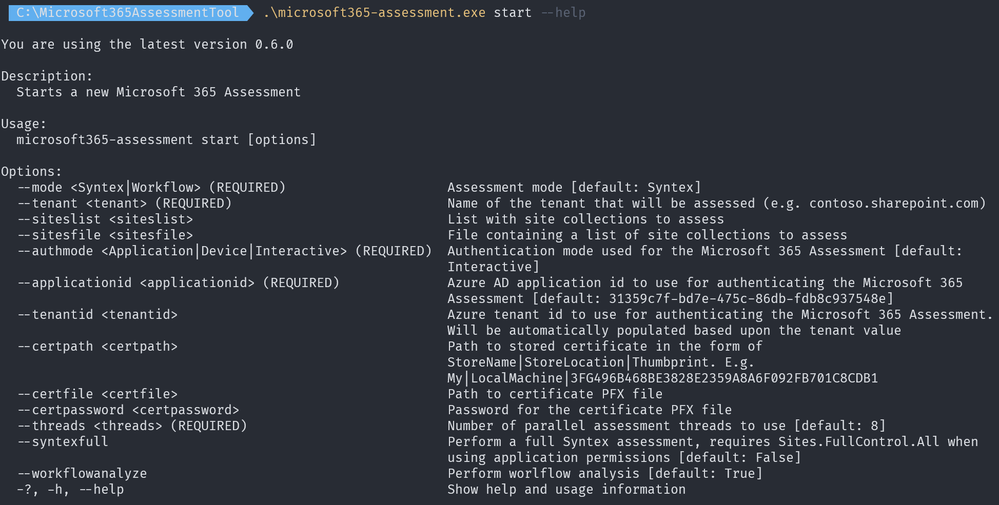

Start an assessment
If you want to use the Microsoft 365 Assessment tool for a particular adoption or deprecation assessment you need to use the Microsoft 365 Assessment tool CLI to start the assessment. When starting an assessment you can provide input that defines how authentication will happen, input specific for the assessment you're running and generic configuration input.
Sample assessment start commands
Before diving into all the possible command line arguments let's first show some typical use cases:
| Task | CLI |
|---|---|
| Start a new Syntex full assessment (application permissions) for a complete tenant | microsoft365-assessment.exe start --mode syntex --authmode application --tenant bertonline.sharepoint.com --applicationid c545f9ce-1c11-440b-812b-0b35217d9e83 --certpath "My|CurrentUser|b133d1cb4d19ce539986c7ac67de005481084c84" --syntexfull |
| Start a new Syntex assessment (delegated permissions) for a set of site collections | microsoft365-assessment.exe start --mode Syntex --authmode interactive --tenant bertonline.sharepoint.com --siteslist "https://bertonline.sharepoint.com/sites/ussales,https://bertonline.sharepoint.com/sites/europesales" |
Command line arguments
The easiest way to see all possible command line arguments for a command (e.g. for start) is using the --help parameter.

In the next chapters the arguments are described in more details, grouped by category
Assessment mode
The main argument to use is the --mode argument that enables you to pick the assessment to run. This argument is required and when not specified it defaults to Syntex. Overtime more assessment modules will be added.
Assessment scope
When running an assessment you do have the option to scope the assessment to either the complete tenant or a set of site collections. When running an assessment for all site collections in your tenant then you have to specify the required --tenant argument. Some samples are: --tenant bertonline.sharepoint.com or --tenant sites.contoso.com in case you're using vanity URLs. If you want to limit the assessment to one or more site collections then you additionally can add either the --siteslist argument or the --sitesfile argument.
Important
When you're using a vanity URL tenant you also need to either use the --sitesfile or --siteslist arguments when starting a new assessment. Enumerating all site collections in a vanity URL tenant will be added in a future release.
Scoping via --siteslist
When using the --siteslist argument you can on the command line provided a comma delimited list of site collections that will have to be assessed. A sample: --siteslist "https://bertonline.sharepoint.com/sites/ussales,https://bertonline.sharepoint.com/sites/europesales,https://bertonline.sharepoint.com/sites/apacsales".
Note
You cannot combine both --siteslist and --sitesfile.
Scoping via --sitesfile
While above --siteslist option is convenient it becomes hard to use when you want to scope to tens or hundreds of site collections. For that purpose the --sitesfile argument is a better solution. You simply point the Microsoft 365 Assessment tool to a text file containing the site collection URLs to assess. A sample: --sitesfile "C:\Microsoft365AssessmentTool\sites.txt". The text file itself is just a list of site URLs:
https://bertonline.sharepoint.com/sites/ussales
https://bertonline.sharepoint.com/sites/europesales
https://bertonline.sharepoint.com/sites/apacsales
Note
You cannot combine both --siteslist and --sitesfile.
Authentication configuration
The main authentication argument to use the --authmode argument that allows you to choose how the Microsoft 365 Assessment tool will authenticate to your tenant. Possible values are:
| Authentication mode | Description |
|---|---|
Application |
Use this mode if you want to use application permissions. This assumes you've configured an Azure AD application to support application permissions. You'll need to specify the certificate to use for authentication via either the --certpath argument or use the --certfile and --certpassword arguments. |
Interactive |
Use this mode if you want to use delegated permissions and you're using a Windows or macOS computer. This assumes you've configured an Azure AD application to support delegated permissions. When you use this mode a browser window will be opened asking you to authenticate. |
Device |
Use this mode if you want to use delegated permissions and you're using a Linux computer. This assumes you've configured an Azure AD application to support delegated permissions. When using this mode you'll see a code on the command line which you'll need to use at https://aka.ms/devicelogin to complete the authentication flow. |
Defining the Azure AD application to use via --applicationid
As mentioned in the configure authentication page it's recommended to create an Azure AD application. To tell the Microsoft 365 Assessment tool which Azure AD application it should use you need to specify the Azure AD application id via the --applicationid argument. A sample: --applicationid c545f9ce-1c11-440b-812b-0b35217d9e83. When you do not specify an Azure AD application id the PnP Management Shell application is used (31359c7f-bd7e-475c-86db-fdb8c937548e).
Specifying the certificate to use when using application permissions
When you've chosen to use application permissions you need to tell the Microsoft 365 Assessment tool the certificate it needs to use for authentication. Two modes are supported: you either point to a certificate already stored in a certificate store on your computer (--certpath) or you point to a PFX file containing the certificate (--certfile). When using a PFX file you also need to specify the password to open the file via --certpassword.
When using --certpath some additional information is needed to understand how the --certpath argument (e.g. My|CurrentUser|b133d1cb4d19ce539986c7ac67de005481084c84) needs to be defined. You typically use the My or Root store names followed by either CurrentUser or LocalMachine to identify the location of the certificate store on your computer. The last part is the thumbprint of the certificate you want to use.
Note
If you're using the LocalMachine store location then be aware that you'll need to ensure the user running the Microsoft 365 Assessment tool has permissions to read the certificate private key in the LocalMachine store. You can do this by granting the account you're using to run the Microsoft 365 Assessment tool permissions to read the private key by opening up the local machine certificate console (certlm.msc), navigating to the certificate you're using, right click on the certificate, choose All Tasks -> Manage private keys... and add your user account with read permissions.
Clearing the authentication cache
When using delegated permissions in combination with either --authmode equal to Interactive or Device then you're seeing a one time prompt for credentials when you use this option for the first time. As part of this operation the authentication library (MSAL) state is cached on disk using machine/user specific encryption. With this cache the Microsoft 365 Assessment tool can automatically request new access tokens whenever that's needed. If you're however switching between tenants or you want to remove this stored cache you can do so via the cache action. Sample: microsoft365-assessment.exe cache --clearauthentication.
Note
An alternative way of clearing this cache is by deleting the msalcache.bin file inside the folder hosting microsoft365-assessment.exe.
Other configuration options
Depending on the chosen assessment mode (--mode argument) you can optionally define extra arguments.
SharePoint Syntex adoption assessment
When running this assessment it's recommended to use the --syntexfull argument, adding this argument will make the assessment use search to gather exact file counts per content type and retention label counts. This however also requires that your Azure AD application is correctly configured to allow this. See the specific SharePoint Syntex assessment page to learn more.
Parallel operations
By default the Microsoft 365 Assessment tool will use multiple parallel operations to read data from your tenant. By default one operation per logical processor is used with a maximum of 10, but you can change this number via the --threads argument.
Important
Running too many parallel operations will make it more likely the assessment will be throttled. Using between 4 and 8 threads is a good starting point.
Running multiple parallel assessments
The Microsoft 365 Assessment tool supports running up to 3 parallel assessments, but do note that just like with bumping up the amount of parallel operations this will increase the likelihood of getting throttled.